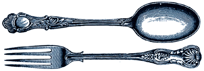

Rice Dreams
Rice Dreams
|
Spinach Risotto
 Risotto is the perfect dinner party dish because it dovetails nicely with that inevitable guest who innocently pokes his head in the kitchen to inquire if there is anything that he can do to help. Yes, he can stir the risotto until his arm well-nigh falls clean from his frame, thank you very much. If you're not blessed with such a guest, well--we can all use a little upper-body work.
1 yellow onion, diced 2 leeks, sliced finely up to the green 1 clove garlic, minced 1/2 lb. bacon, cut up 4 cups chicken broth 1/2 cup white wine 2 bunches fresh spinach, thoroughly cleaned, stems removed 1/2 cup fresh grated parmesan salt and pepper to taste In a large, heavy, deep-sided pan, fry the bacon until crisp. Remove the pieces to a towel to drain and set aside. Pour off enough of the fat until you are no longer deeply disgusted with the idea of using it (olive oil will replace this step if you prefer); set back on medium heat. In a separate sauce pan, heat broth and wine to a simmer; reduce heat so that liquid stays hot. Add onion, garlic, and leeks to the hot fat in the large pan. Cook until translucent, about 10 minutes. Add the arborio and stir for one minute, until the rice begins to pearl nicely. Add 1 cup of the hot liquid to the rice, stir until it is completely absorbed. Continue adding the broth/wine mixture to the rice until all of the liquid is used and is almost absorbed. Add the spinach a little at a time, stirring to wilt it into the rice. Add the reserved bacon, stir. Just before serving, top with the grated cheese and a good grind of pepper. The resulting risotto should have a distinct texture among the grains and not be gluey (but it's still delicious even so). If your timing is a little off, remove from heat and cover for up to 10 minutes. This dish is simple to vegan-ize: substitute the chicken broth with a veggie-based, and best quality olive oil for the bacon, and let the cheese stand alone.
Back to the Table of Contents.
Surf the Boulevards network
to other great alternative
content sites.
|